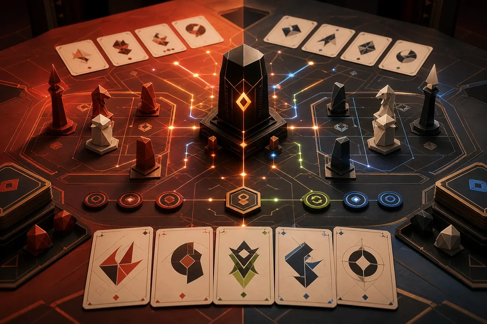

AUTHORITATIVE MULTIPLAYER
卡棋多种玩法，一张牌桌。
从一枚棋子的落点，到一局牌的结算。用 Godot 构建交互，用 Go 校验规则，让房间、连接与游戏各司其职。
- Godot 4 / GDScript
- Go / Gin
- WebSocket
- PostgreSQL / GORM
- WebAssembly
cardchess.brez.top · Web 游戏入口

01 / ARCHITECTURE
规则独立，
公共能力复用。
联网玩法共享房间和消息传输，具体游戏维护自己的规则与私有状态。本地数独、推箱子保留独立运行和存档路径。
- A
Godot 客户端
输入与绘制
Generator / Handler
Model / Presenter / View - B
HTTP / WebSocket
接入与传输
账户与大厅接口
会话校验与消息读写 - C
房间事件循环
连接与生命周期
加入 / 离开 / 输入
准备 / 心跳 / 超时 - D
GameEngine
规则与状态迁移
动作校验 / 回合推进
玩家专属快照 / 结算
操作向服务端提交，确认后的快照返回客户端；账户、游戏会话与战绩通过 PostgreSQL / GORM 持久化。
统一接口，按需装配
服务端工厂用同一注册表提供房间配置与引擎构造。公共 Match 组件承接序号、超时和计分；各游戏按需复用。客户端按注册信息延迟构造 Handler、加载媒体。
状态归属清晰
偏好、认证会话、房间上下文和服务地址分别管理。WebSocket 由房间持有并注入游戏模块；房间扩展承接专属设置，公共 UI 通过信号报告操作。
02 / NETWORK & CONSISTENCY
每一步操作，
都有明确的归属。
围绕重复提交、断线、慢连接和隐藏信息，收紧输入与状态的边界。
SERVER AUTHORITY
服务端裁决
客户端提交操作意图，服务端校验身份、阶段、行动权限和具体规则，再推进回合与计分。客户端根据确认状态更新画面。
例如：贪吃蛇只提交方向，由服务端推进棋盘。
ORDERED COMMANDS
重复与过期处理
公共 Match 框架使用局号和玩家操作序号校验命令，客户端按快照版本拒绝状态回退，并只保留一个待确认操作。
UNO 独立使用 roundId / revision，旧游戏按各自协议处理。
RECONNECT & RESTORE
断线恢复
对局中保留离线席位。恢复会话后重新入房，用本人的完整快照恢复界面；替换连接时校验当前连接身份，忽略旧连接的消息与退出事件。
重连沿用当前牌局和剩余时限。
ROOM LIFECYCLE
并发与慢连接
房间事件循环处理加入、离开、输入和超时，锁内复核容量与身份。发送队列拥塞时断开对应连接；空房、计时器和离线席位统一清理。
避免慢连接持续占用房间投递流程。
PRIVATE SNAPSHOTS
按玩家生成视图
秘密数据在服务端按收件人过滤：UNO 只下发本人手牌，海战棋分开己方舰位与对方海域，你画我猜仅向画手提供题目。
UNO 的 +4 质疑证明只发送给质疑者。
SETTLEMENT & RECORDS
结算与战绩去重
联机战绩由服务端提取，用局记录与玩家的联合唯一约束防止重复写入。查询绑定认证身份，通过游标分页读取历史。
本地战绩使用稳定尝试 ID、临时文件与备份，独立于联机成绩。
ONE COMMAND, ONE CONFIRMATION
一次落子，如何到达棋盘？
- 01 / 提交携带 round、seq 与动作参数
- 02 / 校验检查当前局、预期序号和合法走法
- 03 / 确认返回 revision、nextSeq 与本人快照
公共 Match 框架中，命令通过局号与序号校验后，即使规则拒绝也会消费该序号；客户端收到错误后等待同步快照，再恢复输入。
03 / RULES & ALGORITHMS
把规则的细节，
落实到算法里。
公共框架之外，保留每款游戏真正不同的部分。
INTERNATIONAL DRAUGHTS
国际跳棋：完整吃子路线搜索
递归枚举连吃路径，筛选全局最多吃子路线。被吃棋子在整条路径结束后统一移除，搜索途中仍作为障碍；王棋远走、升变与和棋计数分别处理。
客户端读取服务端给出的合法路线，逐段选择落点并提交完整路径，避免仅凭起终点产生歧义。
SUDOKU
数独：提示与唯一解检查
通过候选数分析提供显性唯一数、隐性唯一数提示，回溯搜索用于求解与唯一解检查，计数达到阈值时提前结束搜索。
原生端保留线程计算路径，Web 单线程版本使用顺序计算。页面协调、布局、数字键盘和棋盘绘制按职责拆分。
04 / CROSS-PLATFORM ENGINEERING
从连接到屏幕，
照顾实际使用。
将认证、输入、加载与验证作为同一套工程的一部分。
- 01统一身份接入
- 接入 BreAccount。网页通过 HttpOnly Cookie、CSRF 和 Origin 校验维持会话；原生端使用仅驻留内存的游戏凭据。WebSocket 身份来自认证会话，连接存活期间持续校验。
- 02手机布局与输入
- 公共布局协调器统一处理窗口变化、安全区和显示缩放，棋盘保留逻辑坐标。横竖屏分别安排棋盘、手牌与输入区，并处理触摸产生的模拟鼠标重复事件和弹窗输入阻断。
- 03Web 加载与资源
- 裁剪 Godot Web 模板，使用 GL Compatibility 与单线程路径；按需加载游戏 Handler、纹理和音频，中文字体采用子集与静态字重。发布流程包含 Brotli 预压缩和解压校验。
- 04分层验证工具
- 静态检查覆盖 GDScript 语法、显式资源路径、游戏注册和跨端协议常量。Go 使用离线替身测试认证、房间与规则；UI、浏览器、数据库和真实联机分别验证。
当前实现与验证边界
部分玩法尚未开放或规则仍待补齐；公共 Match 的序号机制不代表全部旧游戏都使用相同协议。房间重连依赖进程内状态，尚不支持服务重启后恢复正在进行的对局。
战绩写入失败目前记录日志，尚无持久化重试队列。浏览器、实体手机、真实多客户端与数据库验证按具体版本和玩法分别进行；本页不提供未经测量的承载量或性能指标。
TAKE A SEAT
技术落在每一次操作里。
打开卡棋，看看规则如何成为可以参与的游戏。